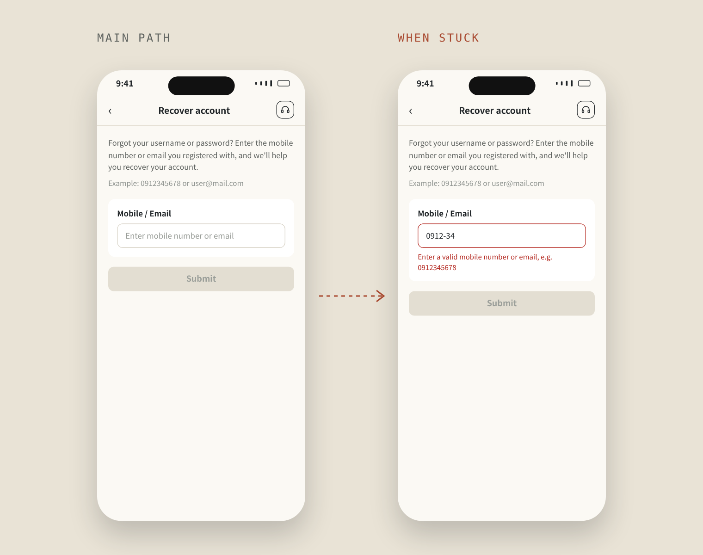
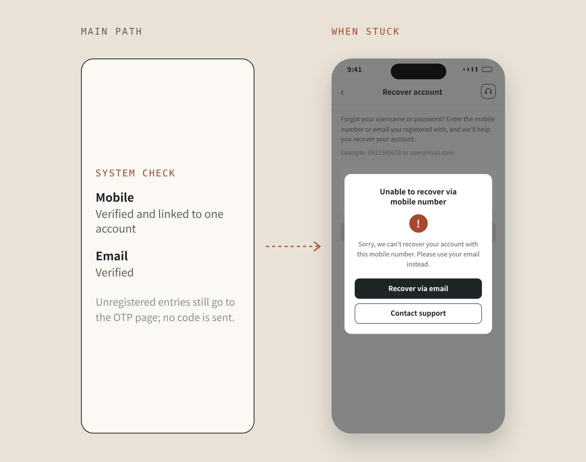
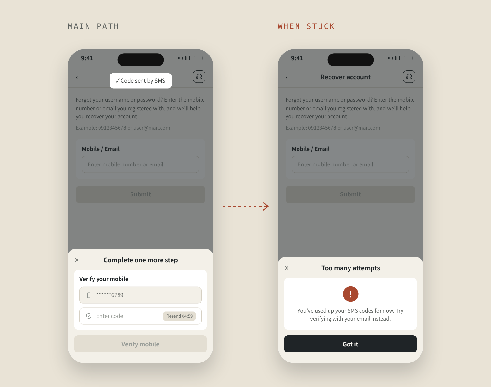
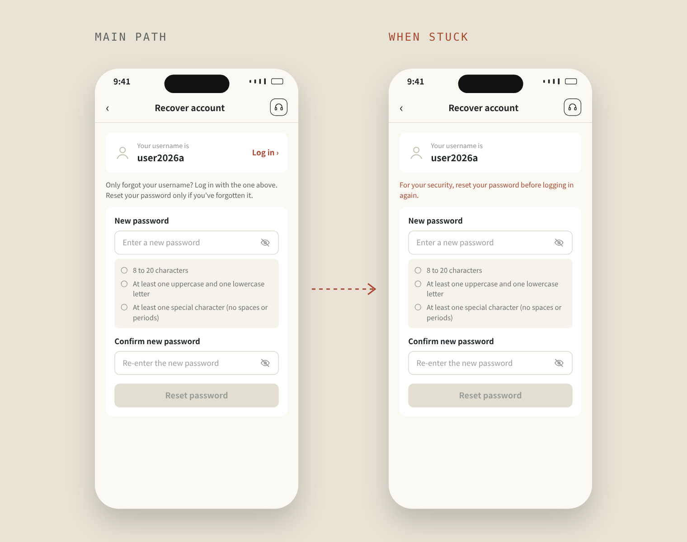

帳號密碼找回流程
忘記帳號、密碼或被鎖帳時，找回流程是用戶唯一的出路。我負責品牌 A 的設計與上線：把流程拉回主站、讓每個卡住的地方都有自助的下一步，同時不讓人藉此查出誰註冊過。
Background|
背景與問題
用戶走進這個流程時，通常已經有點著急：忘了帳號或密碼，或是登入連續失敗 5 次、帳號被鎖住。改版前，找回只能填 Email，收信後點連結、在另開的分頁重設密碼，連結時間一到就失效。收不到信或連結過期的人，只能找客服。
舊的註冊表單一定要填 Email，所以原有用戶都有 Email。但這次註冊移除了 Email 欄位（見作品 01），新用戶很可能根本沒有 Email，舊流程對他們完全走不通，所以一定要加入手機找回。這次我們把整個流程拉回主站內完成，同時要顧及：這裡也是最容易被濫用的入口。
一支手機，多個帳號
同一支手機可以註冊多個帳號，用手機找回時，系統不知道要找哪一個。
不能洩漏誰註冊過
如果直接回答「這支手機沒註冊」，就等於讓人能一支一支測試。
卡住就找客服
收不到驗證碼、次數用完、不符合資格，每一處卡住都會變成一張客服單。
Before & After|
把找回流程拉回主站
Flow|
四個步驟，卡住時都有下一步
示意圖，依實際流程重新整理，不含公司內部資料。
- 01
輸入手機或 Email
一個欄位接受兩種格式，說明文字依市場寫出手機位數與範例。
輸入錯誤時：提示正確格式與範例

- 02
資格檢查
手機號狀態需已驗證、只對應到一個帳號；Email 狀態需已驗證。
不符資格時：一鍵改用另一種方式

- 03
OTP 驗證
沿用既有的 OTP 模組，倒數、有效期與次數上限和其他驗證一致。
次數用完時：改用另一種 OTP，例如手機簡訊次數用完，就請用戶改用 Email 驗證

- 04
重設密碼
先顯示用戶名，再依帳號是否被鎖，給不同的說明與選項。
被鎖帳時：重設成功即解鎖

Key Decisions|
關鍵設計決策
不回答「有沒有註冊」
輸入未註冊的手機或 Email，一樣進到 OTP 頁，倒數照跑，只是不會寄出驗證碼。畫面上看不出差別，也就沒辦法用這個入口逐一試探。
擋下時，直接給下一條路
手機無法對應到唯一帳號時，popup 的主按鈕是「改用 Email 找回」，按下後留在原頁直接切換；「聯繫客服」放在次按鈕，是最後的選項。
先換一種方式，兩種都用完才擋下
手機 OTP 次數用完，就改用 Email 驗證，反之亦然。兩種都用完，才顯示「超過嘗試次數」。
很多人只是忘了用戶名
頁面最上方先顯示用戶名。帳號沒被鎖的話，旁邊就有「前往登入」，只忘了用戶名的人不必重設密碼。
被鎖帳後，可以直接進入找回流程
登入失敗 5 次後，鎖帳 popup 的按鈕直接帶進找回流程；重設密碼成功，帳號也同時解鎖。
Outcome|
成果
Reflection|
反思
例外流程才是關鍵
順利的路徑只有一條，會卡住的情況卻很多。我花最多時間的，是替每一種卡住的情況設計下一步，因為用戶走到這裡時通常已經很著急。
好用和安全要一起想
直接告訴用戶「這支手機沒註冊」最直覺，但也等於讓人可以拿來試探。假 OTP 頁是我們找到的折衷：一般用戶幾乎不受影響，想試探的人也問不出結果。
下次先定義怎麼衡量
這次的設計目標是減少客服負擔，但上線前沒有訂好追蹤方式，無法驗證效果。下次我會在設計初期就和 PM 對齊指標，例如找回相關的客服詢問量。
Username & password recovery
When users forget their username or password, or get locked out, recovery is their only way back. I designed and shipped it for Brand A: I brought the flow back on-site, gave every point where users get stuck a self-service next step, and made sure no one can use it to find out who is registered.
Background|
The problem
People arrive here already a little anxious: they forgot their username or password, or failed to log in five times and got locked out. Before, recovery meant typing an email, clicking a link in the inbox and resetting the password in a separate tab, and the link expired after a countdown. Anyone whose mail never came or whose link ran out had to contact support.
The old sign-up form required an email, so existing users all had one. But sign-up no longer asked for an email (see Work 01), so new users might not have one at all. The old flow simply could not reach them, which made phone recovery a must. This time we brought the whole flow back onto the main site, while remembering it is also the entry point most open to abuse.
One phone, many accounts
A phone number can be shared by several accounts, so it may not point to just one.
Don't reveal who's registered
Saying "this number isn't registered" lets anyone test numbers one by one.
Stuck means a support ticket
A missing code, a used-up limit, an ineligible number: each dead end turns into a support request.
Before & After|
Bringing recovery back on-site
Flow|
Four steps, a next step whenever stuck
A redrawn summary of the real flow, with no company data.
- 01
Phone or email
One field takes either format; helper text shows each market's phone length and an example.
If mistyped: show the right format and an example
- 02
Eligibility
The mobile number must be verified and linked to only one account; the email must be verified.
If ineligible: one tap to the other method
- 03
OTP
Reuses the existing OTP module, so timers, expiry and limits match other checks.
If out of attempts: switch OTP type. For example, when SMS codes run out, ask the user to verify by email instead
- 04
Reset password
Shows the username first, then adapts to whether the account is locked.
If locked: a reset unlocks the account
Key Decisions|
Key design decisions
Never confirm who's registered
An unregistered phone or email still lands on the OTP page, timer and all, but no code is sent. Nothing on screen differs, so the page can't be used to probe numbers one by one.
A blocked path offers the next one
If a phone doesn't map to one account, the popup's main button is "Recover by email", switching in place; "Contact support" is the secondary button, the last resort.
Switch methods first, block only when both run out
When phone OTP attempts run out, email takes over, and vice versa. Only when both are used up does "Too many attempts" appear.
Many only forgot the username
The username comes first. If the account isn't locked, "Log in" sits right next to it, so people who only forgot their username skip the reset.
From lockout straight into recovery
After five failed logins, the lockout popup leads straight into recovery, and a successful reset unlocks the account.
Outcome|
Outcome
Reflection|
Reflection
Edge cases are what matter
There is only one smooth path, but many ways to get stuck. Most of my time went into designing a next step for each of them, because users who end up here are usually already anxious.
Usability and security together
Telling users "this number isn't registered" is the most natural option, but it also lets people probe. The decoy OTP page was our compromise: regular users barely notice, and anyone probing learns nothing.
Define the measure first
The goal was to reduce support load, but no tracking was set up before launch, so the effect couldn't be verified. Next time I would agree on a metric with the PM early, such as recovery-related support requests.